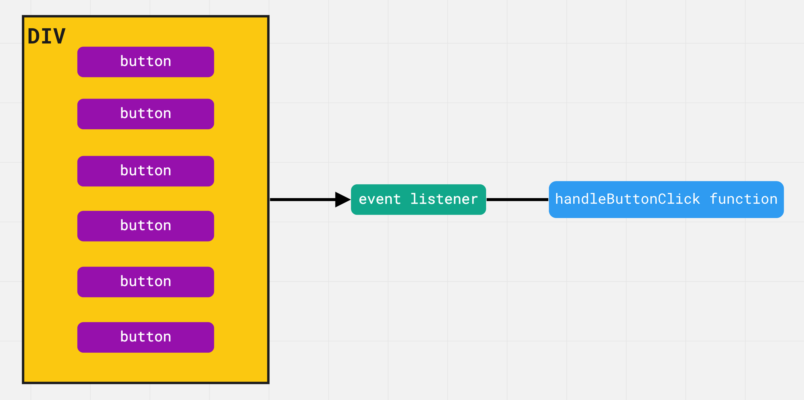

Делегування подій
Спливання дозволяє реалізувати один із найкорисніших прийомів - делегування подій (event delegation). Він полягає у тому, що, якщо є група елементів, події яких потрібно обробляти однаково, то додається один обробник на їх загального предка, замість того, щоб додавати обробник до кожного елемента. Використовуючи властивість event.target, можна отримати посилання на цільовий елемент, зрозуміти, на якому саме дочірньому елементі відбулася подія, і обробити її.
Розглянемо делегування на прикладі. Створюємо елемент <div>, додаємо до нього будь-яку кількість кнопок, наприклад 100, і реєструємо кожній слухача події кліку з функцією handleButtonClick.
Проблема у тому, що у нас є сто слухачів подій. Всі вони вказують на одну і ту саму функцію слухача, але слухачів 100. Що буде, якщо ми перемістимо усіх слухачів на спільного предка - елемент <div>?
Тепер є тільки один обробник події кліку і браузеру не потрібно зберігати у пам'яті сто різних слухачів. Тобто делегування зводиться до трьох простих кроків.
- Визначити спільного предка групи елементів для відстеження подій.
- Зареєструвати на елементі-предку обробник події, яку ми хочемо відловлювати з групи елементів.
- В обробнику використовувати event.target для вибору цільового елемента.
Такий підхід спрощує ініціалізацію слухачів однотипних елементів. Можна додавати, видаляти або змінювати елементи, при цьому, не потрібно вручну додавати або видаляти обробники подій.
Палітра кольорів
Будемо створювати палітру кольорів з можливістю вибрати колір по кліку і відображенням обраного кольору. Замість того, щоб призначати обробник кожному елементу палітри, яких може бути дуже багато, повісимо один слухач на загального предка div.color-palette. В обробнику події кліка використовуємо event.target, щоб отримати елемент, на якому відбулася подія і пов'язаний з ним колір, який будемо зберігати в атрибуті data-color.
See the Pen lesson-13-color-palette by goit-academy (@goit-academy) on CodePen.
ЦІКАВО: Обов'язково перевіряємо мету кліка, щоб це точно була кнопка, тому що ми не хочемо обробляти кліки в елемент-контейнері. Для перевірки типу елемента використовуємо властивість nodeName.